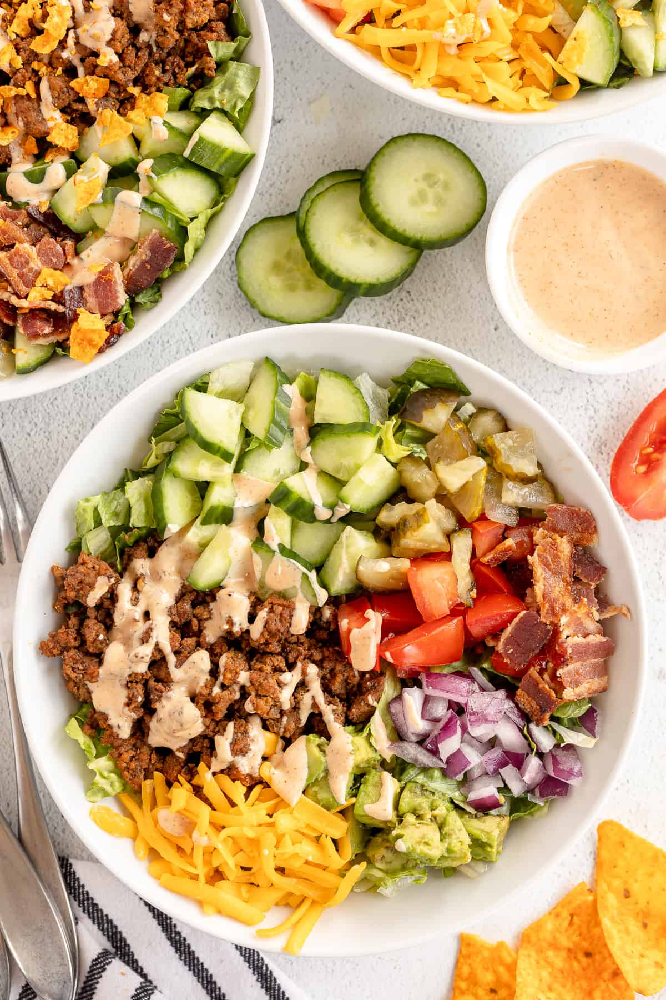

Cheeseburger Bowls

Description
This dish is pretty straightforward. Think of a cheeseburger, with no bun, thrown together in to a bowl!
Ingredients
- 3 lb lean ground beef
- 1 cup rice
- 6 slices american cheese
- 2 tablespoons garlic powder
- 1 tablespoon onion powder
- 1/2 teaspoon salt
- 1 teaspoon black pepper
Steps
- Add ground beef into a pan on medium high heat with cooking spray, listed seasonings, and cook for 10-12 minutes until completely cooked.
- Add 2 cups of water to a large pot on high heat with dry rice, bring to a boil, then cover, turn the heat to low, and let cook for an additional 10 minutes.
- Split beef and rice into 6 meal prep containers.
- Add any optional add on's.